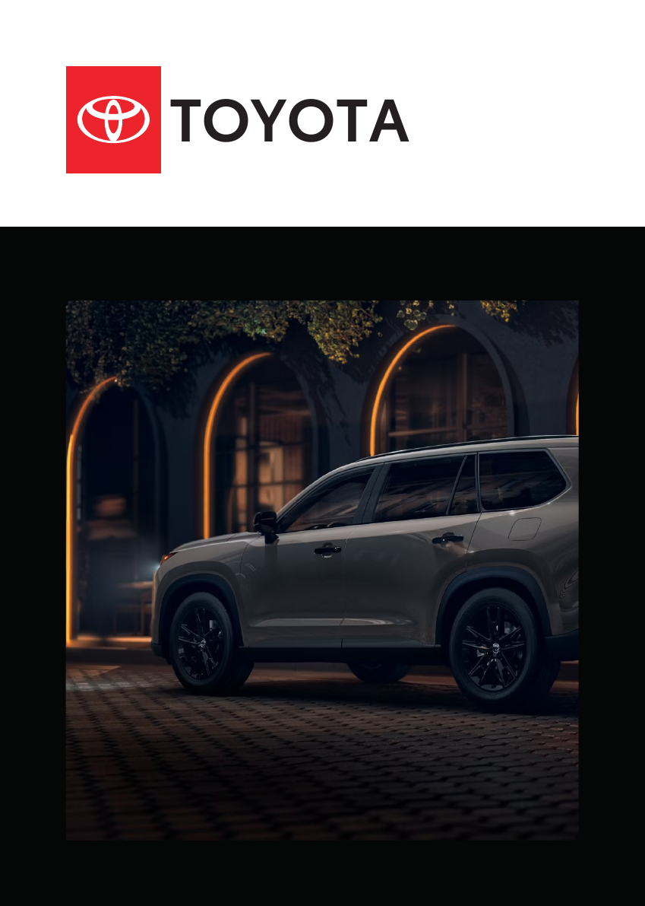
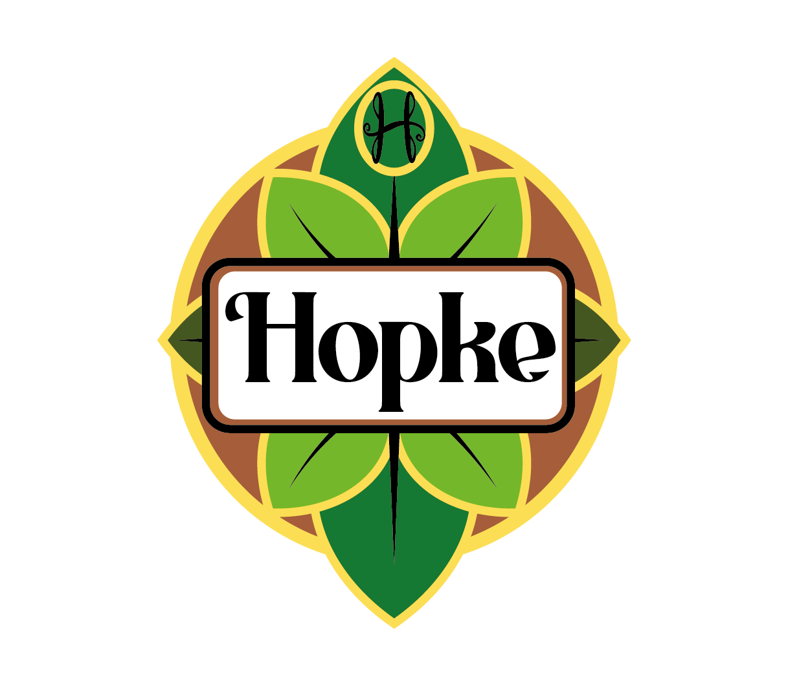
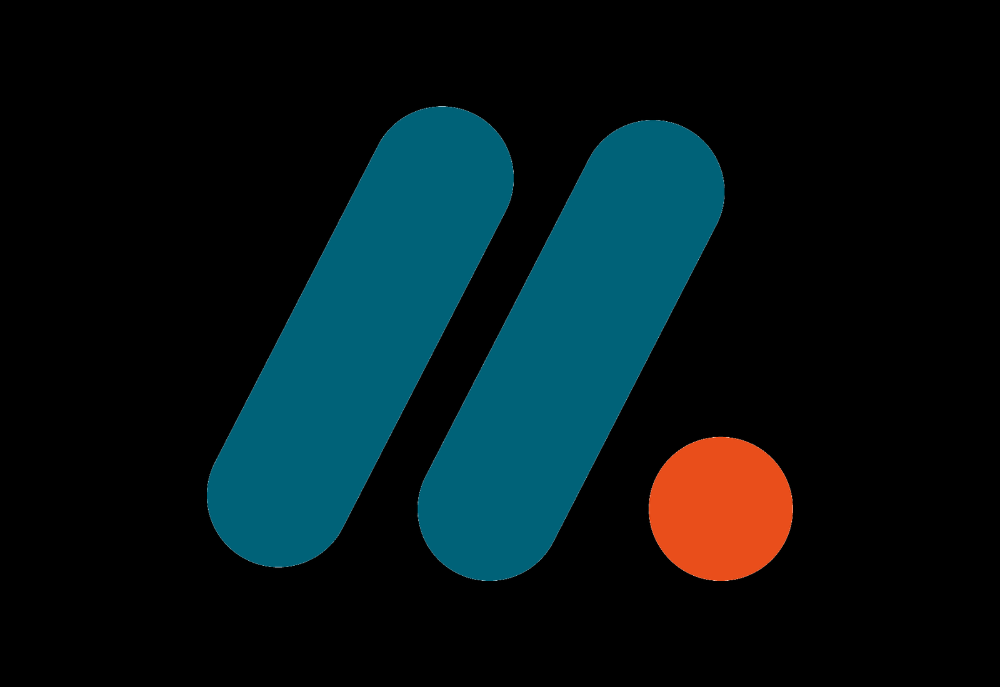

Portfolio 2026
Creative Designer
Welkom op mijn portfolio. Hier vind je een selectie van mijn projecten op het gebied van mediavormgeving. Ontdek mijn werk, vaardigheden en creatieve aanpak.

Over mij
Over mij
Hoi! Mijn naam is Joeri de Hoon en ik volg de opleiding Mediavormgeving. Op deze website laat ik mijn portfolio zien: een verzameling van projecten waar ik tijdens mijn opleiding aan heb gewerkt en waar ik trots op ben.
Ik vind het leuk om creatieve ideeën om te zetten in aantrekkelijke en gebruiksvriendelijke ontwerpen. Tijdens mijn opleiding heb ik ervaring opgedaan met verschillende vormen van vormgeving, zoals branding, webdesign, grafisch ontwerp en digitale media. Met ieder project blijf ik mezelf ontwikkelen en leer ik nieuwe technieken.
Met dit portfolio wil ik laten zien wie ik ben, wat ik kan en hoe ik werk. Ik ben op zoek naar een stageplek en toekomstige werkmogelijkheden waar ik mijn creativiteit en vaardigheden verder kan ontwikkelen. Neem gerust een kijkje tussen mijn projecten. Ik kom graag in contact om mijn passie voor mediavormgeving verder toe te lichten.
Portfolio
Een logische selectie opdrachten met ruimte voor beeld en verhaal.

Grafisch ontwerp
Toyota brochure
Een informatieve brochure over Toyota, historie, productie en kwaliteit.
Bekijk project
Merkidentiteit
Biermerk ontwerp
Een complete identiteit voor het zelfbedachte biermerk Hopke.
Bekijk project
Corporate Identity
Huisstijlhand-boek
Richtlijnen voor logo, kleurgebruik en typografie tijdens mijn stage.
Bekijk projectSkills
Mijn ervaring met deze programma's.
Werkwijze
Van abstracte richting naar een helder visueel systeem.
Onderzoek
We starten met een grondig onderzoek naar de doelgroep en wensen. Zo leggen we een sterke basis voor een doordacht ontwerp.
Concept
Op basis van het onderzoek ontwikkelen we een creatief concept. Hier bepalen we de richting, uitstraling en boodschap van het ontwerp.
Design
Het concept wordt uitgewerkt tot een visueel ontwerp. We zorgen voor een passende vormgeving die aansluit bij jouw wensen en doelgroep.
Uitwerking
Het definitieve ontwerp wordt technisch uitgewerkt en tot in detail verfijnd.
Oplevering
Na de laatste controles leveren we het eindresultaat op in de juiste bestanden.
Reviews
Woorden van opdrachtgevers met gevoel voor detail.
Joeri heeft tijdens zijn stage laten zien dat hij creatief, leergierig en gemotiveerd is. Hij werkt nauwkeurig, pakt feedback goed op en levert verzorgd werk af. We hebben de samenwerking als prettig ervaren en wensen hem veel succes in zijn verdere carrière.
MakeYourSignJoeri is een enthousiaste en betrouwbare medewerker die altijd klaarstaat om aan de slag te gaan. Hij werkt nauwkeurig, leert snel en was een fijne collega om mee samen te werken. We kijken met plezier terug op de samenwerking.
FemkeReuversContact
Neem contact met mij op.
Wil je meer weten over mijn portfolio, stage-ervaring of beschikbaarheid? Je kunt mij rechtstreeks bereiken via mail of telefoon.